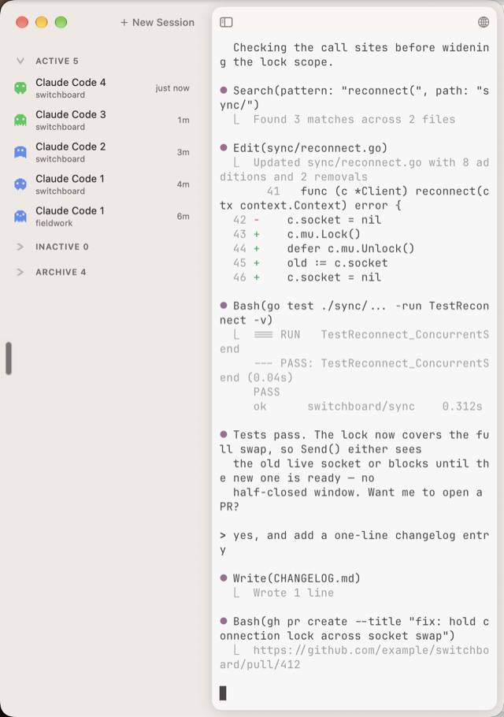
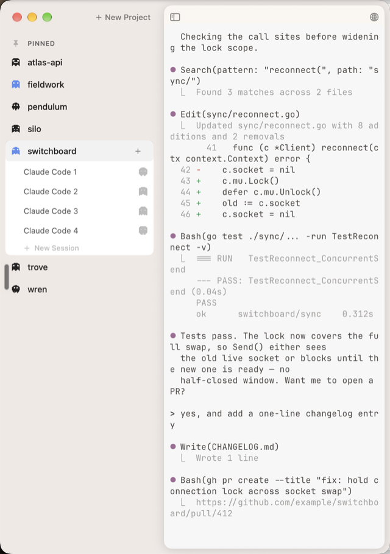
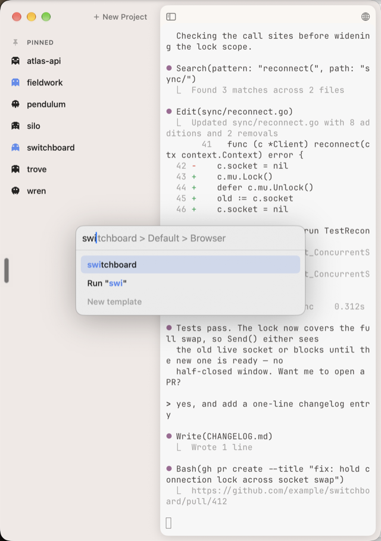
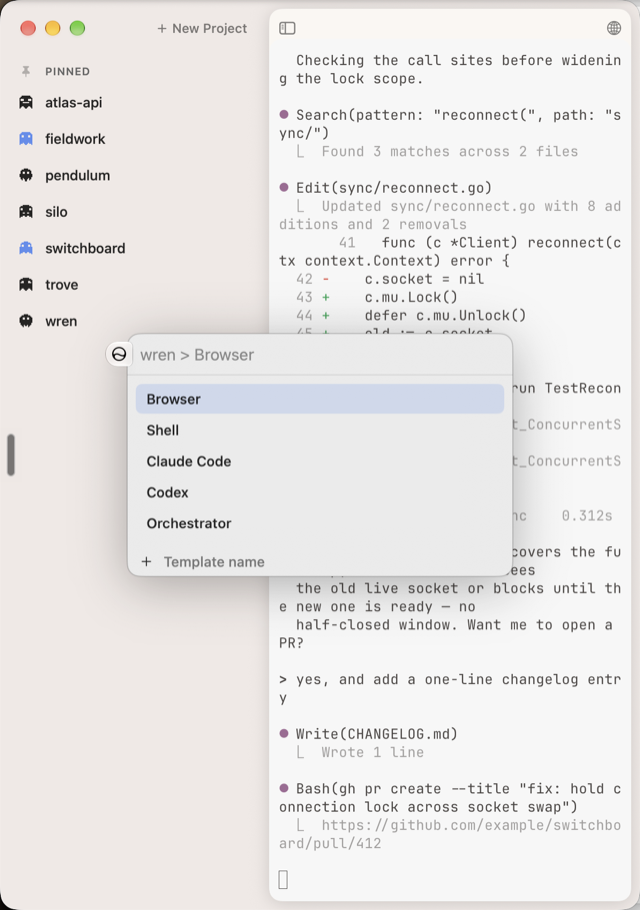
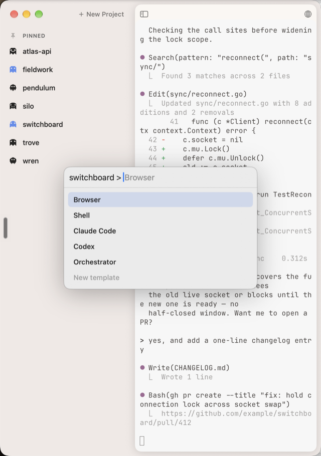
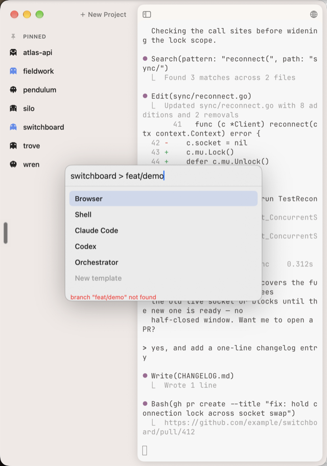
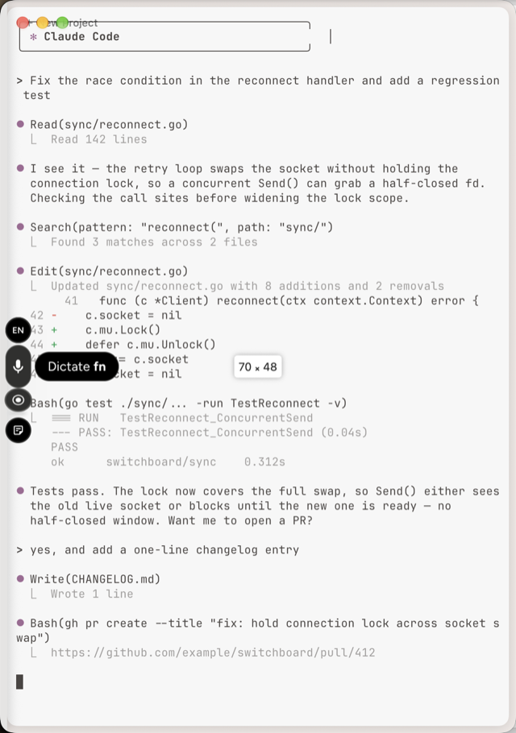
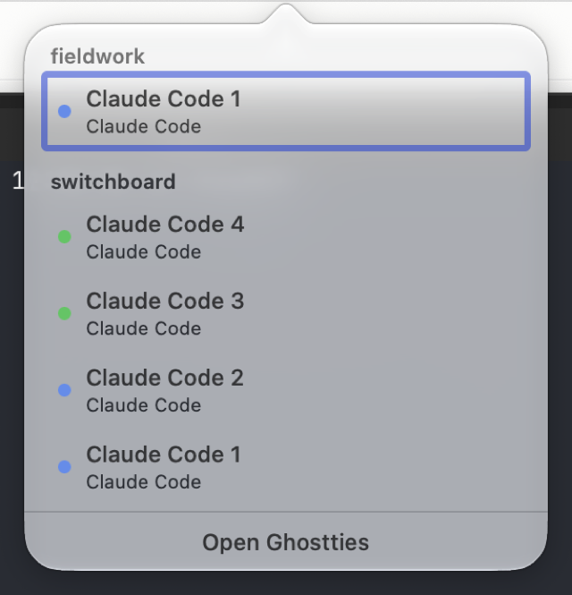
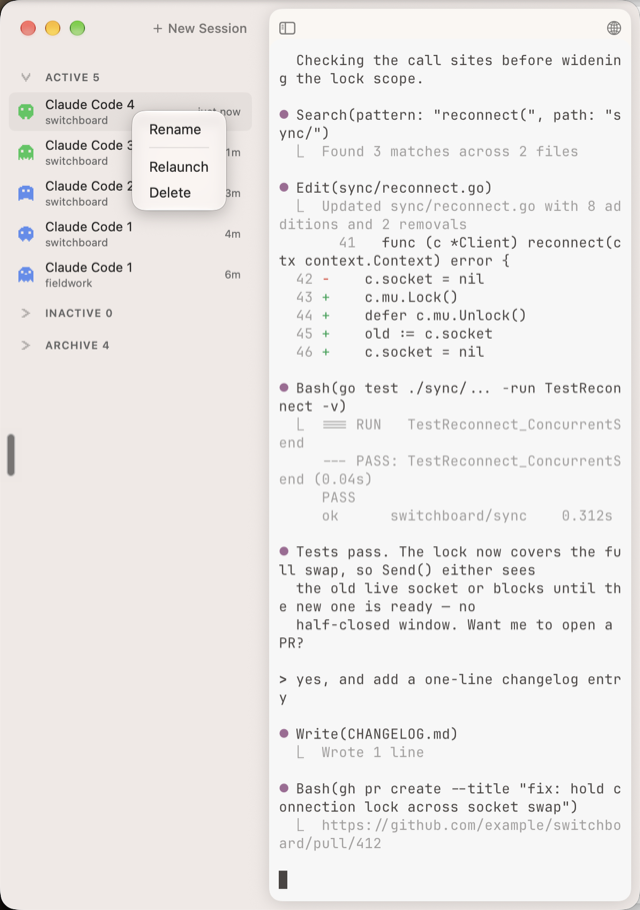

Audit of the app and ghostties.org as of 5 Sep 2026, then 13 avenues from mild to wild. Tick the ones worth talking about.
S = a day or two · M = about a week · L = a few weeks · XL = a month or more.
My pick: 1, 3 and 4 this week (each S, together they make the headline feature reachable, turn on the lights, and put motion on the site). Then 5 as the launch moment, with 9 running alongside from now on. Of the wild ones, 11 is the one I'd bet on; 13 is the question to sit with, not a plan.
Why now: HookInstaller only seeds the script; it should register the seven hooks itself behind a visible opt-in, idempotently and reversibly, and the sidebar should say so when status is still guessing.
Traction: it is the one thing beta.24 promised that a new user cannot find.
Why now: Tab-inserts-a-space is local-only, variant C has never been seen on screen, the npm installer is unpublished at 0.2.0, the Homebrew auto-bump PAT is unset. beta.25 is also the first real run of the rebuilt release pipeline.
Traction: none by itself. It unblocks everything under it.
Why now: ghostties.org has no analytics at all and the repo has no docs beyond the README. Enable Vercel Web Analytics (included with the plan up to a monthly event cap — check the cap first; Plausible is about $9/mo if you would rather not), open GitHub Discussions, and add /docs with four pages: real status setup, gt, the MCP server, shortcuts.
Traction: you cannot grow what you cannot see.
Why now: the capture rig exists (XCUITest marketing capture) and the TCC screen-capture block that stalled it is solved. 14 seconds, dark and light, today's still becomes the poster.
Traction: the homepage claim is "status you can read at a glance". A still cannot show a glance.
Why now: 24 betas reads as never shipping. Cut stable, drop "beta" from the site, light the stable appcast, write one launch post in Sean's voice (through the writing:draft flow).
Traction: the only real launch moment available. Show HN / X post.
Watch out: stable means the crash-class bugs (CEF, status) are actually closed for strangers.
Why now: the March plan promised Orchestrator, Reviewer and Planner presets; only linear-sync shipped. Four to six curated presets, seeded to both ~/.ghostties/presets/ and ~/.claude/prompts/.
Traction: a new user's first session should be one click, not a blank command field.
Why now: MenuBar/ has three files already (controller, dropdown, icon renderer). Ship the dropdown with per-project status and a macOS notification when a session needs you, click to focus.
Traction: the value lands when the window is NOT focused. Right now nothing reaches you then.
Why now: the spec is complete (six decisions settled 26 Aug). Blocked on one thing — no pid/sessionId on AgentSession — so rows cannot read ~/.claude/sessions/<pid>.json yet.
Traction: this is the homepage promise made literal.
Why now: the CEF crash hunt, the composer saga, 24 betas from a designer — the making-of is the marketing and it already exists in the repo's plans and evidence folders.
Traction: the only lever that moves the funnel numbers without shipping code.
Why now: a session detail panel reading the session log: todos, tokens and cost, last tool, time since last output. Ghostties would know more about your sessions than Claude Code's own UI.
Traction: a demo nobody else has.
Watch out: the log format is undocumented and will change under you.
Why now: publish both on npm and brew, usable without Ghostties — in Warp, iTerm, tmux. The task file format becomes a small spec others can read.
Traction: distribution through the ecosystem instead of the app. The CLI is the free sample; the app is where you see it.
Why now: a read-only iPhone view of session status — "what finished overnight" from bed.
Traction: the north-star moment (morning glance) without opening the laptop.
Watch out: the mission says no sync, no accounts. This is the card that breaks that rule.
Why now: the sidebar as a companion app hosting stock libghostty, instead of a 25.5k-line fork that chases upstream. The earlier evaluation chose GhosttyKit and closed the question; the new evidence is fork size and the weight of embedded Chromium.
Traction: none directly. Cheaper upstream merges, and a product that could outlive the fork.
Watch out: a question to sit with, not a plan. Presented because you asked for wild.
Then: "the multi-agent terminal." What shipped: a multi-session terminal. Good, and not the same thing.
Now: agents are persistent staff — a name, a role, a model tier, tools, skills, memory. A session is one of them doing one task.
Next: keep everything above; make Ghostties the place those agents live.
AgentSession.ghostCharacter, project ghost picker). Identity is per session and per project today, not per agent.~/.claude/agents/{explore,implementer,planner,reviewer,strategist}.md — frontmatter with name, description, model, tools. Nothing in Ghostties reads them.linear-sync ships as a preset.gt, the MCP server's 12 tools, .ghostties/tasks/*.md) already lets an agent file and update its own work.My pick: 14 and 15 first — they are the reframe, and they are cheap because the agent files already exist. 17 is the move that makes it feel like staff. 20 is the wild one I'd actually build; 22 is the one that breaks the mission, listed because you asked for wild. Positioning (23) waits until 14 is on screen — name the thing after you can see it.
Why now: today a ghost means "this session" or "this project". Give each agent definition a ghost and a name; a session row shows WHO is working (the agent's ghost) and on what. Frank's ghost is the one bouncing.
Traction: this is the visible reframe. One screenshot says "staff", not "tabs".
Watch out: the mission says the mascot does not personify the interface. Agents are not the interface — but this moves the ghost from brand to a working glyph. Decide on purpose.
Why now: a third sidebar tab (Projects · Sessions · Staff). One row per agent, read straight from ~/.claude/agents/*.md and each repo's .claude/agents/: name, ghost, role line, model tier, last active, sessions running now. Click a row, the composer opens with that agent chosen.
Traction: zero new config format. Ghostties becomes the UI over files the ecosystem already uses, which is the only way a personal tool wins here.
Why now: the status hooks already carry the agent's last notification or permission request. Show one factual line under a row when it needs you — "needs a decision on the auth flow" — not a chat, not a mood. Tool, not companion.
Traction: the glance gets an answer, not just a colour.
Why now: a session row's context menu gets "Hand to…" listing your staff. Pick Bob: a handoff brief is generated from the current session (Sean already has a /handoff skill that does this), Bob starts with it, the row's ghost changes. The old session stays, parked.
Traction: the moment sessions become staff. Work moves between people; it does not restart.
Why now: click an agent in Staff: role, model tier and effort, allowed tools, the skills it carries, its last five memories, sessions this week, cost this week. Edit tier and effort in place; it writes the frontmatter back.
Traction: the first place you can actually see what your agents are made of.
Watch out: cost needs the session logs (Part one, card 10) — same undocumented format.
Why now: some staff do not wait for you. "Charlie runs the morning briefing at 07:30", "Reviewer runs on every PR". They show in Staff as sleeping ghosts with a next-run time; when one runs, a session appears in Sessions like any other. Claude Code's scheduled routines are the engine; Ghostties is the roster.
Traction: the sidebar is true when you are not there. That is the north-star morning glance.
Why now: an orchestrator dispatches implementers, a reviewer checks them, they message each other. Today that is invisible. Indent child sessions under their parent in the sidebar; show who is waiting on whom; collapse the wave into one row when it is quiet.
Traction: the honest picture of what "multi-agent" means in 2026 — a tree, not a list. Nobody draws it.
Watch out: parent/child needs the harness to say who spawned whom. The status hooks are the seam; the data may not be there yet.
Why now: cloud sessions and managed agents show in the same Staff roster as local ones — same ghost, a small cloud badge. Start Vinnie in the cloud from the composer, watch from the sidebar, pull the result down. Codex agents in the same roster, read from AGENTS.md and its config profiles, so the roster is harness-neutral.
Traction: Ghostties as the neutral home, whichever vendor runs the agent. Rare position.
Watch out: two vendors' state formats, both moving.
Why now: export an agent — frontmatter, skills, a memory seed — as one bundle; import someone else's "Reviewer Rita". A community roster.
Traction: the only card here that brings other people's work into the app.
Watch out: the mission lists marketplaces as an anti-goal. This is the card that breaks it.
Why now: "the multi-agent terminal" undersells the direction and overclaims the present. Three strawmen, Sean's call, run through his voice before any of them ships.
Traction: the tagline is the first thing a stranger reads. It should describe the thing they will see in the hero film.
17 of 18 states captured on 5 Sep from a fixture-mode Dev build. Invented project names, canned transcript, no contact with the live app.
The records said what exists. The pixels say how it reads. Below: what the captures showed, what moved in the ranking, and the defects that fell out.
Status is two colours and no legend. Sessions tab: a green ghost means working, a blue one means idle. Projects tab: session rows show a grey ghost and no status at all. The fixture has no "needs you" session, so the terracotta signal the homepage sells never appears anywhere.


The composer is the strongest surface. Inline ghost text, a Run "swi" row, five templates (Browser, Shell, Claude Code, Codex, Orchestrator), and an inline New template row with an icon picker.


Two composer questions need your eyes and a real repo. After swi and Tab the field reads switchboard > Browser: the branch segment is gone and a chevron sits where the 2 Sep decision says Tab inserts a space. And switchboard > feat/demo shows a red "branch not found" with no offer to create it. The fixture folders are not git repositories, so this may be the no-repo path.


Overlay mode captured broken or mid-transition. Traffic lights drawn over "New Project", the terminal shifted up under the title bar, no sidebar visible. The same title-bar collision appears when the browser opens.

The browser opens as a separate floating window, loads the network, and the process cannot terminate afterwards. Three of three runs, Debug build, fresh profile. The downgrade guard fixed one cause; the browser is not settled.
The menu bar dropdown is already live. Grouped by project, status dots, an "Open Ghostties" button. Only notifications are missing.

The context menu is Rename, Relaunch, Delete. No archive, no pin, no hand-off, no open-in.

Task-first never rendered. The capture named task-first shows the Projects tab, and the run log called it captured. The task layer stays unseen.
Sidebar closed is clean and flush. Ghostty's "70 × 46" resize overlay flashes on every toggle. Minor.
| Avenue | Was | Now | Why |
|---|---|---|---|
| 1 Make real status one click | first | first | Everything on screen is the inferred status. |
| 8 Ghost glyph owns status | medium | top of medium, paired with 16 | On screen the promise is a green-or-blue ghost with no key. Project rows show none. |
| 16 One line from the agent | mild | paired with 8 | Same reason. Colour needs a sentence. |
| 4 Record the hero film | this week | after the fixture gains a "needs you" row | There is nothing to film until a row can say it. |
| 7 Menu bar and notifications | M | S–M | The dropdown exists. Notifications and click-to-focus remain. |
| 6 Preset gallery | medium | lower | Five templates ship, Codex and Orchestrator included. The gap is what they contain, not the picker. |
| 2 Close the loop: beta.25 | S | S, blocked on item 3 above | Variant C is confirmed on screen. The Tab question blocks the push. |
| 17 Hand it to Bob | M | M | The three-verb context menu is its obvious home. |
| everything else | — | unchanged | The pass did not touch it. |
"The pass moved one thing above everything but real status: make status legible. 8 and 16 together, before the hero film, because the film has nothing to show until a row can say 'needs you'. Then 4. Menu bar drops to a small follow-on. Two composer questions go to Sean with a real repo, not to an agent."